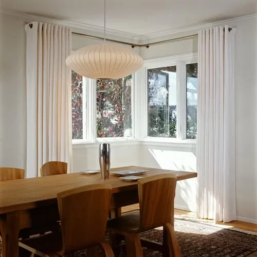
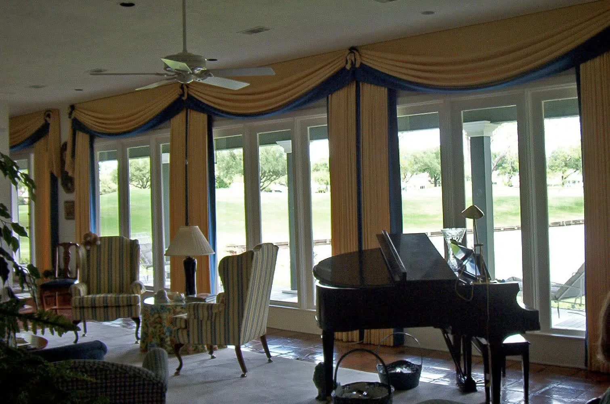
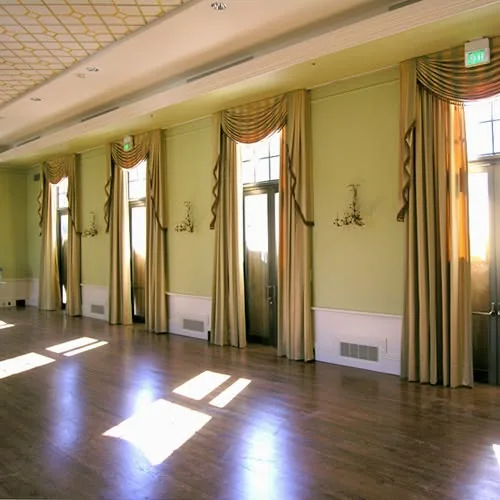

Draperies & curtains
Designer-specified panels, layered treatments, rods and tracks, with attention to placement, fabric handling and the finished room.
Drapery and curtain installation in SeattleServing the Greater Seattle Area.

Hello, my name is Steve Hewitt. I have been installing window coverings professionally since 1997.
I work directly for interior designers, architects, and people who have experience designing custom window coverings for a discriminating clientele. Wholesale to the trade only please.
I pride myself in my attention to detail, critical and accurate measuring input, customer service, helping to create a superlative end user experience, and the wisdom that comes with nearly thirty years of experience.
Please feel free to contact me with any questions you may have, availability, or pricing.
Thank you,
Steve Hewitt
Custom drapery, Roman shades, motorization, automation, roller shades, and any designer-specified treatments installed with care.
For private residences, design studios, and commercial spaces.

Window covering installation for architects and interior designers throughout the Greater Seattle area. Wholesale to the trade only please.

Designer-specified panels, layered treatments, rods and tracks, with attention to placement, fabric handling and the finished room.
Drapery and curtain installation in Seattle
Installation planning for blind mounting, clearances and alignment. Share the product specifications and window details with Steve.
Blind installation in Seattle
Roman shades, roller shades and designer-specified treatments, with motorization and automation details discussed before installation.
Shade installation in Seattle

Transcript. Contact details and handwritten signature omitted.
To Whom It May Concern:
This is to confirm that Steve Hewett of Steve's Installations has been a contractor for my business, Paul's Draperies, Inc. for the past two years. Prior to this time I have known Mr. Hewett through our predecessor business of the same name, for approximately three years.
Mr. Hewett works in a professional manner and is known to be prompt for his installations. We have always had positive comments from our clients as to his manner, work and professionalism with installations given him.
I can confirm that he is a good installer and will be an asset to any window covering business that contracts his service.
Very truly yours,
Irwin Zook, President
Paul's Draperies, Inc
Transcript. Contact details and handwritten signature omitted.
To Whom It May Concern,
I have worked with Steve Hewitt for the last year and a half. He is very easy to work with, professional in the way he conducts business, reliable, and on time. Steve has a great rapport with clients and designers alike. He was always available for my questions and brainstorming sessions. It was a pleasure working with him. Steve would be a great asset to your company.
Sincerely,
Laurie Cambra
Drapery dept manager
Transcript. Contact details and handwritten signature omitted.
To Whom It May Concern:
This letter is in recommendation of Steve Hewett with whom we have contracted to install window coverings for our firm for the past 5 years.
We are an interior design firm specializing in upper end residential interiors in Northern California since 1946. Our design staff consists of seven professional interior designers who design and supervise the installation of our projects. Steve has worked with all members of our design staff and it is on their behalf that I write this letter.
Steve has established a reputation of acting in a professional manner with our staff as well as with our clients. He has been responsible, punctual, and dependable in all situations. He has exhibited a high degree of professionalism in the manner in which he completes our projects and in the way he relates to our clients.
We are very sorry to lose Steve as our window covering installer and wish him well in his relocation to Southern California.
Sincerely,
Ron Martino, ASID
President